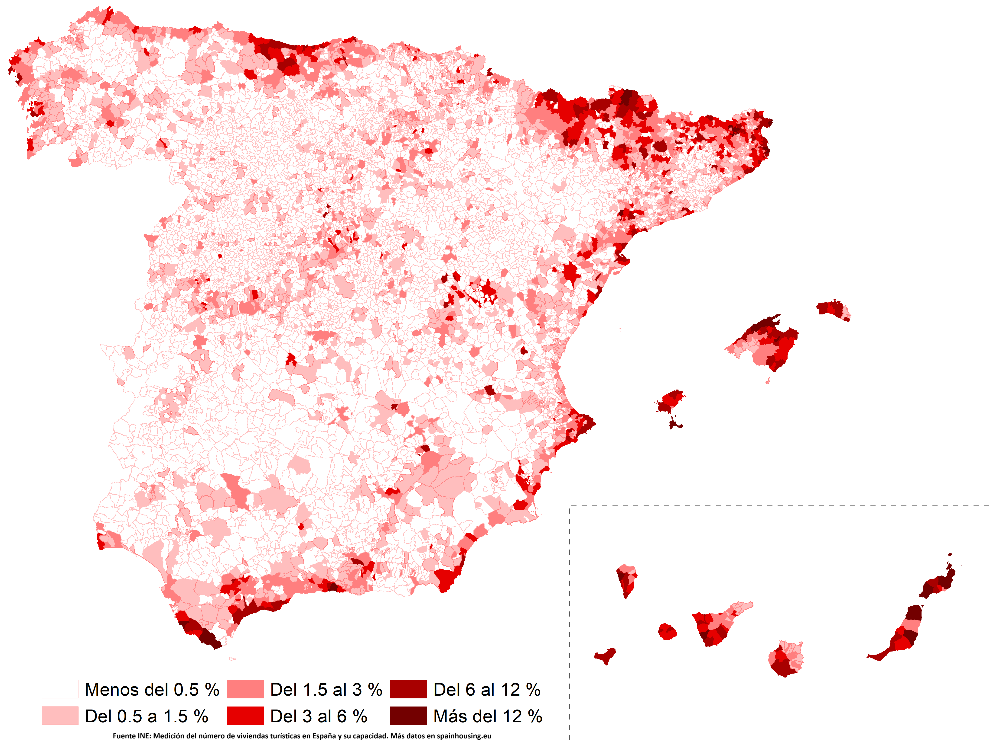

↑ Evolution of rental prices and housing prices according to both Idealista and the INE, base 100 = 2015.
The INE rental prices are an experimental indicator. For rental prices, Idealista data offers greater reliability since it is the reference marketplace in Spain for rental-seeking purposes.
↑ Evolution of rental prices and housing prices according to Idealista.
Residential rental
↑ Distribution of residential rental, Spain: the values represent the percentage of residential rental homes relative to the total number of homes in each municipality.
Vacation rental

↑ Distribution of vacation rental, Spain: the values represent the percentage of vacation rental homes relative to the total number of homes in each municipality.